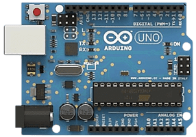
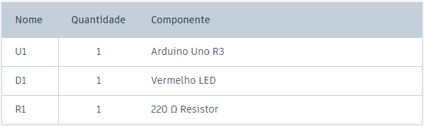
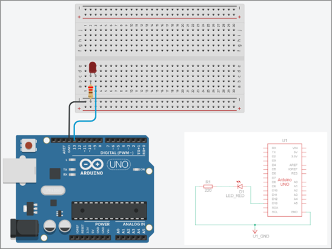
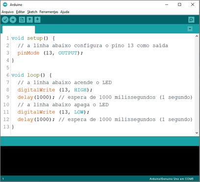

Aula 1 – Pisca LED: Seu Primeiro Código
Olá! Seja muito bem-vindo(a) ao tutorial de Arduino Básico, uma série com 10 aulas feita sob medida para você que quer começar a programar com Arduino sem mistério e sem dor de cabeça. Aqui, vamos aprender passo a passo como programar a placa Arduino e criar projetos que acendem LEDs, leem sensores, tocam buzzer… enfim, tudo aquilo que faz a gente se sentir um verdadeiro engenheiro de filmes futuristas (só que com fios bagunçados e uma bancada cheia de LEDs, fios e resistores).
Se voc√™ nunca programou antes, não se preocupe. A ideia aqui √© come√ßar do zero e evoluir com calma, sempre com exemplos práticos, explica√ß√µes claras e uma boa dose de paci√™ncia. E sim, errar faz parte do processo. (se a luz não acender de primeira, a culpa provavelmente não √© do universo üòÑ)
Prepare seu computador, sua plaquinha Arduino e o famoso cabo USB (aquele que sempre some quando a gente mais precisa). Está tudo pronto? Então bora começar!

O que é Arduino?
Arduino é uma plataforma de prototipagem eletrônica de hardware e software livre, ou seja, você pode criar seus próprios projetos de forma simples, prática e com baixo custo. Ele é ideal para quem está começando, mas também é poderoso o suficiente para projetos mais avançados.
As placas Arduino podem ser fabricadas artesanalmente ou compradas prontas. O software usado para programá-las é gratuito e está disponível para download.
O que dá pra fazer com o Arduino?
Aqui vai um spoiler: quase tudo! üòÑ Com o Arduino, voc√™ pode desenvolver projetos de automa√ß√£o residencial, rob√≥tica, Internet das Coisas (IoT), e at√© projetos criativos como brinquedos, instrumentos musicais, instala√ß√µes art√≠sticas e muito mais.
Quer ir mais longe? Há projetos incríveis com impressoras 3D, drones e até satélites feitos com base no Arduino. As possibilidades são praticamente infinitas!
Arduino UNO R3
Entre os diversos modelos de placas Arduino, o UNO R3 se destaca por ser o mais utilizado, o mais bem documentado e o mais indicado para quem está começando. Até os simuladores o preferem!

- Conector USB (alimentação externa e comunicação serial)
- Botão de reset da placa Arduino
- Polyfuse (proteção da porta USB do computador contra curtos e sobrecargas).
- LED indicativo que a placa está ligada
- Pinos de entrada e saída digital (~ podem ser usados com PWM)
- LED embutido ligado ao pino 13 (LED_BUILTIN)
- ATmega 16U2 (conversor USB/serial)
- LED TX (transmissor) e RX (receptor) - comunicação serial
- Pinos 0 e 1 (também podem ser usados para comunicação com um módulo bluetooth)
- Porta ICSP (programação direta via protocolo serial)
- Microcontrolador ATmega 328P
- Cristal de quartzo 16 Mhz (clock)
- Conector fêmea 2.1 mm com centro positivo (alimentação externa: 7 a 12 V)
- Regulador de tensão (5V)
- Pinos de tensão e GND
- Entradas analógicas
Software Arduino
üîó https://arduino.cc/en/software/O software arduino, tamb√©m conhecido como Arduino IDE √© gratuito e funciona com qualquer modelo de placa da plataforma Arduino. Para come√ßar, voc√™ vai precisar de tr√™s itens: um computador, a placa Arduino e um cabo USB para conectar os dois. Com isso, já √© poss√≠vel escrever, enviar e testar seus primeiros programas.

Componentes eletrônicos básicos
Antes de programar, √© importante entender com quem estamos lidando no mundo f√≠sico: os componentes eletr√¥nicos. São eles que dão vida aos nossos projetos, controlam a corrente el√©trica e fazem a mágica acontecer ou pelo menos, piscarem LEDs! üòÑ
A Eletrônica é a área da ciência que estuda e utiliza circuitos formados por esses componentes, com o objetivo de representar, armazenar, transmitir ou processar informações. Em outras palavras, ela transforma sinais elétricos em ações, e é assim que controlamos sensores, motores, botões e muito mais.
Mas calma! Não vamos estudar tudo de uma vez. A cada aula, conforme os experimentos forem evoluindo, vamos conhecer novos componentes: resistores, LEDs, botões, sensores e por aí vai. Vamos ver para que servem, como se comportam e como usá-los com segurança e criatividade. Você não precisa decorar nada agora, vamos aprender fazendo, explorando e testando juntos.
Protoboard

Usada para prototipação de circuitos elétricos, a protoboard permite a montagem dos componentes eletrônicos sem uso de solda. Ela é feita por blocos de plástico perfurados e possui internamente várias lâminas que fazem o contato elétrico.
Resistores

O resistor √© um dos componentes mais básicos e tamb√©m mais importantes da eletr√¥nica. Sua principal fun√ß√£o √© simples e essencial: limitar a corrente el√©trica que passa por um circuito, evitando que outros componentes "tomem um choque de realidade". üòÑ
A resistência elétrica é medida em ohms (Ω), em homenagem ao físico Georg Ohm (o cara que descobriu que sim, a eletricidade também precisa de limites!). Você vai encontrar resistores de todos os tipos e valores, desde frações de ohm até milhões de ohms (também conhecidos como megaohms). Eles são pequenos, geralmente com listras coloridas no corpo (uma espécie de código secreto que indica o valor da resistência).
Calculadora de resistores ( 4 faixas )
üé® Cores → Valor
Faixa 1 | Faixa 2 | Faixa 3 ( multiplicador ) | Faixa 4 ( tolerância )
üî¢ Valor → Cores
Valor em ohms (Ω) | Tolerância
LEDs

O LED (sigla para Diodo Emissor de Luz) é aquele componente simpático que acende quando tudo está funcionando como deveria. O LED funciona como um diodo especial, que em vez de só conduzir a corrente elétrica em um sentido, também emite luz nesse processo. Mas atenção: o LED tem polaridade, ou seja, não dá pra ligar de qualquer jeito! O terminal menor (ou o lado do chanfro na base) indica o cátodo, que é o lado negativo. Já o terminal maior é o ânodo (lado positivo).
Os LEDs estão por toda parte: em várias cores, formatos e tamanhos. Alguns piscam, outros mudam de cor, e outros são tão potentes que parecem holofotes de show! Mas cuidado! LEDs são sens√≠veis e não gostam de corrente demais. Se voc√™ ligar direto no Arduino sem um resistor para limitar a corrente... bem, digamos que o LED vai brilhar forte e brevemente. üò¨
Então, regra de ouro: sempre use um resistor em série com o LED. Assim, você garante luz na medida certa e um circuito saudável.
Qual o resistor ideal para ligar um LED?
A saída digital do Arduino fornece 5V, e a corrente segura para a maioria dos LEDs é 20 mA. Cada cor de LED tem uma queda típica de tensão:
- üî¥ Vermelho: ~2.0V
- üü¢ Verde: ~2.2V
- üü° Amarelo: ~2.1V
Usando a famosa Lei de Ohm (V = R × I), podemos calcular o resistor ideal. Mas calma, você não precisa virar um matemático agora! Aqui vai a dica prática:
üîπ Resistor de 220Œ© ou 330Œ© já está √≥timo para a maioria dos casos. Eles garantem seguran√ßa tanto para o LED quanto para o Arduino.
üîπ Quer ajustar o brilho? Veja a mágica na prática:
- 150Ω → LED bem brilhante (20 mA – ideal)
- 220Ω → Brilho equilibrado (~13 mA)
- 330Ω → Brilho mais suave (~9 mA)
- 470Ω → LED discreto (~6 mA)
⚠️ Evite resistores abaixo de 150Ω — podem forçar o LED e a saída do Arduino.
Laboratório prático: Pisca LED
Objetivo: Desenvolver um simples circuito para acionamento de um LED.
Lista de material:

Diagrama elétrico:

Código fonte:
